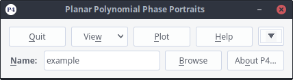
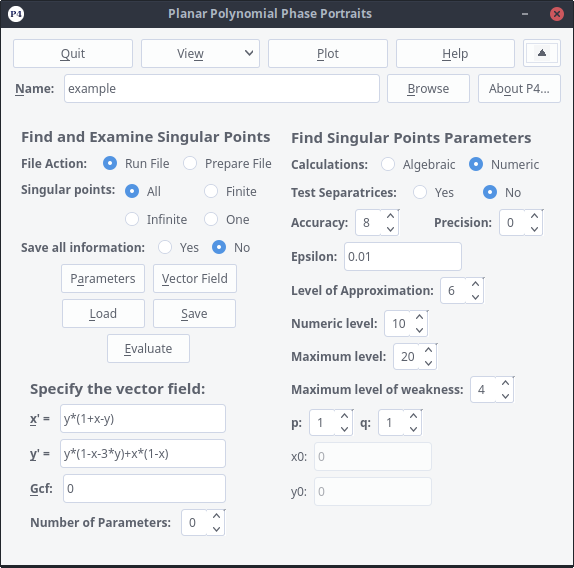
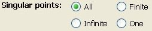
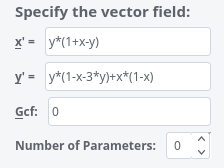
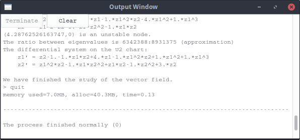

Polynomial Planar Phase Portraits
THE (MAIN) P4 WINDOW

This window is usually the first one to visit. By pressing
the main window unfolds in a larger window:

Here you load or introduce the Polynomial Differential System you will study, adjust the parameters for the study, and execute
the main part of the computations.
The first thing to do is to enter a name of the vector field file you want to open (or a name for a new file that you want to create). You type in the name in the field. Spaces in the filename are allowed. Default extension
is .inp, but it is not necessary to manually add this extension. You can also use the button
to browse all directories for input files. Note that the file contents is not automatically loaded after you enter
the name; you have to press the yourself.
-
The Option Set
will toggle you between two options. The default option is Run File. It will make the program
to be executed completely making the study of the Polynomial Differential System and preparing everything
to integrate every separatrix of it. Sometimes you may wish to select option Prepare File. This option
generates a
MAPLE file (.txt). Now you can run the file directely with
MAPLE. You may be interested in this option if the amount of computations is very large and you prefer to run
a
MAPLE program in batch mode instead of running it in graphics-user-interface-mode.
-
The Option Set

will allow you to choose among a complete study of all singular points, restrict yourself to the finite or
infinite ones, or make the study of only one finite singular point. In the later case you should introduce
the point by entering its coordinates in
and
.
-
The Option Set
will toggle you between two options. The default option is No and reduces the amount of information
that you get when you press the button
in the
P4 window to the most interesting features of the Polynomial Differential System you are going to study. The
option yes will fill that file with an exhaustive description of every step followed by the program.
-
The button will show/hide the
parameter-subwindow:
 Once you have entered all the data one could choose to make the P4-window smaller (just in order to save some space on the
screen).
Once you have entered all the data one could choose to make the P4-window smaller (just in order to save some space on the
screen).
-
The button will show/hide the
vector field-subwindow:

Once you have entered all the data one could choose to make the P4-window smaller (just in order to save some space on the
screen).
-
The button
will load the already existing file which name has been provided in the
P4 window. You will get an error message if the file does not exist.
-
The button
will save all the changes you have done to the Polynomial Differential System and the running parameters
into the file which name has been provided in the
P4 window.
-
The button
will start the execution of the study of the Polynomial Differential System. You must wait until the
terminal window from which you are executing the program shows a message saying that the study is ended:

-
The button
will close all P4 windows and stop stop the program.
 Back to the main page
Back to the main page
 Back to the windows page
Back to the windows page